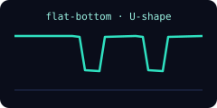
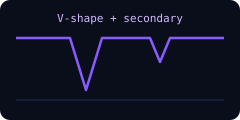
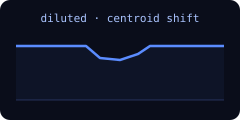
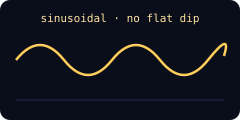
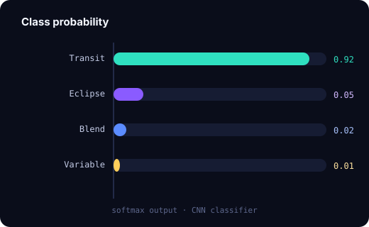
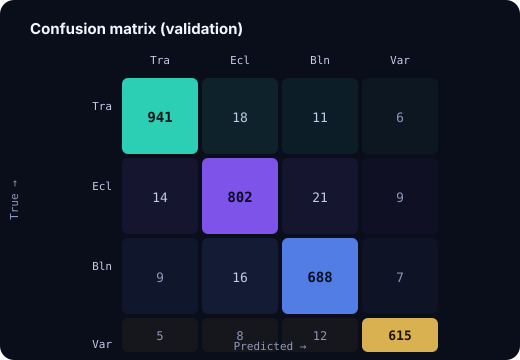

Symmetric, flat-bottomed U-shaped dip. Consistent depth across events; no secondary eclipse.
A CNN sorts each detected dip into one of four astrophysical categories.

Symmetric, flat-bottomed U-shaped dip. Consistent depth across events; no secondary eclipse.

Deep V-shaped primary with a shallower secondary eclipse — hallmark of an eclipsing binary.

Diluted, asymmetric dip from a nearby contaminating source; centroid shifts in/out of transit.

Smooth, sinusoidal modulation from starspots or pulsations — no discrete transit-like dip.


A 1-D convolutional network ingests phase-folded, binned flux plus engineered features (odd–even depth, secondary depth, centroid offset, V/U shape ratio). Trained on curated labels of confirmed planets, false positives and eclipsing binaries; probabilities are calibrated with isotonic regression.